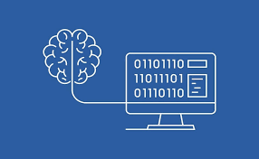
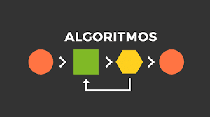

Lógica de Programação
Lógica de Programação é a capacidade de organizar pensamentos e instruções de forma sequencial e estruturada para resolver problemas computacionais.
- Estrutura hierárquica com tags
- Semântica moderna (HTML5)
- Base para CSS e JavaScript

Pensamento Computacional
- Decomposição: Quebrar problemas complexos em partes menores
- Reconhecimento de Padrões: Identificar similaridades e tendências
- Abstração: Focar nos aspectos essenciais, ignorando detalhes desnecessários
- Algoritmos: Criar sequências de instruções para resolver problemas
Algoritmos
Um algoritmo é uma sequência finita e bem definida de instruções para resolver um problema ou executar uma tarefa.
Características dos Algoritmos
- Finitude: Deve ter um fim
- Clareza: Cada instrução deve ser clara e sem ambiguidade
- Efetividade: Deve resolver o problema proposto
- Entrada: Pode ter zero ou mais dados de entrada
- Saída: Produz pelo menos um resultado
Representação: Pseudocódigo
É uma forma de representar algoritmos usando linguagem natural estruturada, antes de convertê-los para uma linguagem de programação específica.
Vantagens do Pseudocódigo
- Independente de linguagem de programação
- Focado na lógica, não na sintaxe
- Fácil de entender e modificar
- Facilita a comunicação entre programadores

Exemplo:
Calcular área de um retângulo
ALGORITMO CalcularAreaRetangulo
INÍCIO
ESCREVER "Digite a largura:"
LER largura
ESCREVER "Digite a altura:"
LER altura
area ← largura * altura
ESCREVER "A área é:", area
FIM
Exercício 1: Boas-vindas Personalizadas
Escreva um pseudocódigo para um algoritmo que solicite ao usuário seu nome e idade, e depois exiba uma mensagem personalizada no estilo "Bom dia <NOME>".
Introdução à Linguagem Python
Python é uma linguagem de programação de alto nível, interpretada e de propósito geral, conhecida por sua sintaxe clara e legibilidade.
Características do Python
- Fácil de aprender e usar
- Multiplataforma
- Grande comunidade e bibliotecas
- Suporte a múltiplos paradigmas (procedural, orientado a objetos, funcional)

Aplicações do Python
- Desenvolvimento Web (Django, Flask)
- Ciência de Dados e Machine Learning (Pandas, NumPy, Scikit-learn)
- Automação de Tarefas
- Desenvolvimento de Jogos
- Computação Científica
O Comando print()
O comando print() em Python é usado para exibir informações
na tela do console. Ele pode imprimir textos, números, variáveis e resultados
de expressões.
Funcionalidades do print()
- Exibir textos e mensagens
- Mostrar valores de variáveis
- Formatar saídas com múltiplos argumentos
- Controlar o final da linha (nova linha ou espaço)
Sintaxe Básica
print("Sua mensagem aqui")
print(variavel)
print("Texto", variavel, "mais texto")
Exemplos Simples
# Exibir texto simples
print("Olá, mundo!")
# Exibir variáveis
nome = "Maria"
idade = 25
print("Nome:", nome)
print("Idade:", idade)
# Exibir múltiplos valores
print("Olá", nome, "! Você tem", idade, "anos.")
# Formatação com f-strings (Python 3.6+)
print(f"Olá {nome}! Você tem {idade} anos.")
Dica:
O print() é sua principal ferramenta para debug e comunicação com o usuário!
Exercício 2: Apresentação em Python
Escreva um programa em linguagem Python que apresente informações a seu respeito na tela do terminal.
O comando input()
O comando input() é usado para ler dados do usuário
via console, permitindo que o programa receba informações e as
processe.
Sintaxe e Características
# Sintaxe básica
variavel = input("Mensagem para o usuário: ")
# O input() SEMPRE retorna uma string (texto)
nome = input("Digite seu nome: ") # Retorna string
print(f"Olá, {nome}!")
Conversão de Tipos (Casting)
# Para números inteiros
idade = int(input("Digite sua idade: "))
# Para números decimais
altura = float(input("Digite sua altura: "))
# Exemplo completo
nome = input("Digite seu nome: ")
idade = int(input("Digite sua idade: "))
altura = float(input("Digite sua altura (em metros): "))
print(f"Nome: {nome}")
print(f"Idade: {idade} anos")
print(f"Altura: {altura}m")
Importante:
Sempre converta os dados para o tipo correto antes de fazer cálculos matemáticos!Exercício 3: Soma de Dois Números
Desenvolva um programa que peça dois números, realize a soma e exiba o resultado.
Exercício 4: Média de Três Notas
Calcule a média de três notas informadas pelo usuário e exiba o resultado.
Exercício 5: Conversão de Temperatura
Converta uma temperatura de Celsius para Fahrenheit usando a fórmula: F = (C * 9/5) + 32
Desafio: Cálculo de Idade
Crie um programa que solicite o ano de nascimento do usuário e calcule sua idade atual.
Projeto
Gerenciamento de Tarefas Simples
Vamos criar nosso primeiro projeto prático aplicando todos os conceitos aprendidos!
Objetivos do Projeto:
- Solicitar o nome de uma tarefa do usuário
- Armazenar a tarefa em uma variável
- Exibir confirmação da tarefa adicionada
- Aplicar formatação profissional na saída
Este é o primeiro passo para um sistema mais complexo.
Em projetos futuros, expandiremos funcionalidades como: listar tarefas, marcar como concluídas, remover tarefas, etc.Resumo da Aula
O que Aprendemos?
- Conceitos fundamentais de Lógica de Programação
- Definição e características de Algoritmos
- Introdução à linguagem Python e suas aplicações
- Uso do comando
print()para exibir informações - Uso do comando
input()para ler dados do usuário
Habilidades Desenvolvidas
- Capacidade de estruturar pensamentos logicamente
- Criação de algoritmos simples em pseudocódigo
- Escrita de programas básicos em Python
- Interação com o usuário via console